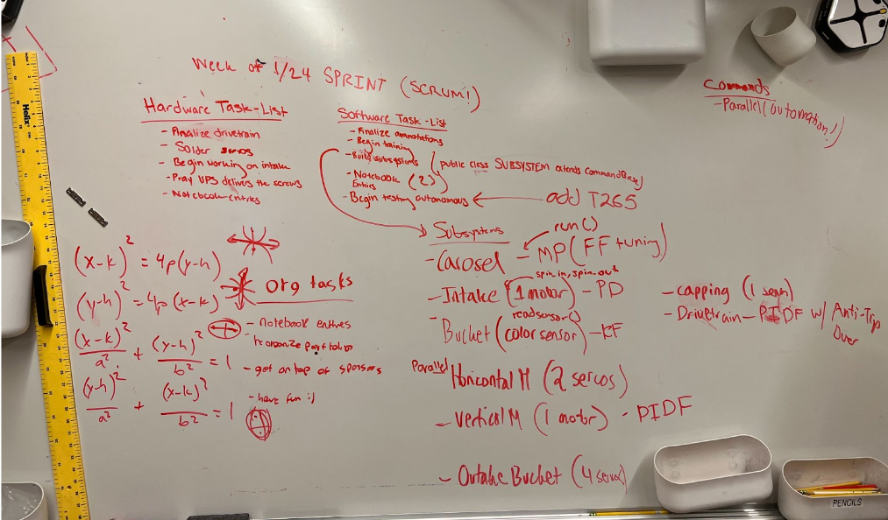

Agency, Project Management, Grit
Trello
In order to manage the tasks of the Ultro Robotics Team, primarily the software division, we utilized Trello, an online project management website.
Trello allows users to collaborate together on one board, create and assign tasks, assign due-dates, etc. More specifically, we deploy the SCRUM workflow process in which we work through sprints.
A sprint are a group of tasks that are to be completed within a set amount of time. This allowed us, at least in the software division, to be on track and be ready for testing.
For example, as seen in the Trello board above, we have divided tasks based on divisions and have assigned team members specific tasks. Each task has their own respective deadline, for which most have been checked-off.
For my senior thesis project, I plan on utilizing Trello to work through springs to accomplish my goals as outlined here.
